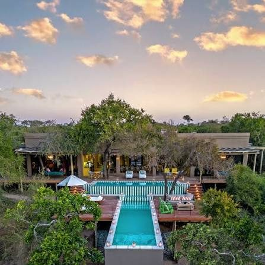

The Royal Portfolio's flagship — some of the most decorated guides in Africa, a serious spa, and Big Five viewing at the highest level of luxury on the continent.
Every safari lodge claims great guiding; Royal Malewane can prove it. The Royal Portfolio's flagship in the Thornybush reserve employs one of the most decorated guiding and tracking teams in Africa — including some of the very few Master Trackers ever qualified — and it changes what you see on every single drive.
The lodge itself makes no apology for luxury: colonial-romantic suites with private pools and butlers, a spa that would hold its own in a capital city, and dining that turns the bush dinner into an event. This is the safari for travelers who want the Big Five delivered at a five-star hotel's standard of comfort.
I pair it with Cape Town — usually Ellerman House — for the classic South Africa itinerary: city, winelands, then the bush, with no charter-flight gymnastics required.

The guiding. Master Trackers on staff — the rarest qualification in the field, and the reason sightings here feel scripted.
Private pools and butlers. Every suite has both — heat, dust and midday siestas handled in style.
A real spa in the bush. Post-drive treatments that would rate in a city — the recovery half of safari, taken seriously.
It's the splurge option. Rates sit at the top of the South African market — worth it for the guiding alone, but budget-led trips have alternatives I'm happy to map.
Thornybush is fenced into the Greater Kruger system. Game viewing is superb and reliable; purists chasing vast open wilderness may prefer Botswana — that's Mombo.
Malaria precautions apply. The Greater Kruger is a low-risk malaria area — plan prophylaxis with your doctor before travel.
The most luxurious way to see the Big Five in South Africa — and the guiding team is the genuine article, not the marketing.
Rates through me are identical to booking direct — the perks are not. As a Fora advisor, my clients receive a space-available upgrade, daily breakfast, and a hotel credit — plus my direct line to the team on property before and during your stay.
Check Availability